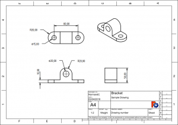
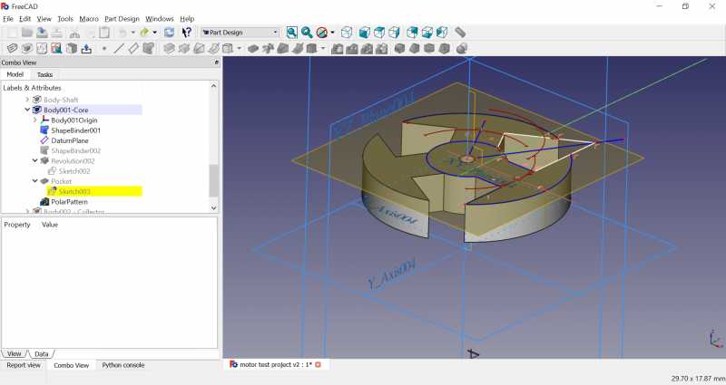

O FreeCAD 0.17 foi lançado a 06 de abril de 2018, obtenha-o na página de Download. Isto é um resumo das alterações mais importantes. A lista completa de alterações pode ser encontrada em MantisBT bugtracker FC 0.17 changelog.
Versões anteriores das Notas de lançamento do FreeCAD podem ser encontradas em Por onde começar.
{kind=link}
Garden Railway Coach O&K (by FreeCAD-User "Garden Railway Coach O&K", see Users Showcase)
Contents
Highlights
It's been 2 years since the previous 0.16 release, but the FreeCAD team didn't stay idle during that time. More than 6,800 revisions were added to FreeCAD's source code. For comparison, this is more than three times the work done between v0.16 and 0.15! Most existing workbenches benefited from improvements, and two completely new workbenches were added. New additional modules were also developed by the community. Some of the highlights:
The PartDesign workbench has been completely overhauled. A new Body container now holds a chain of features and lifts the requirement of mapping sketches to planar faces. New tools to create datum (reference) geometry such as points, axes and planes make PartDesign a lot more versatile.

The new Addon manager available from the Tools menu (which was previously available as the addons installer macro) makes installing and updating add-on modules and macros much easier and standardized across Windows, Mac OS X and Linux.
{kind=link}
The Sketcher now supports B-spline creation with many ways to control curves and display curve information.
{kind=link}
The new TechDraw workbench aims to replace the Drawing workbench, and already provides more features than the old Drawing workbench. 
{kind=link}
General
- Yorik van Havre wrote "The FreeCAD Manual" as an introductory book on how to use FreeCAD.
- Document recomputes can now be disabled/enabled via the context menu.
- There's a new Revit navigation style.
- A new Navigation Indicator at the bottom right of the FreeCAD window allows quick access to the navigation styles.
{kind=link}
{kind=link}
- The dependency graph benefited from graphical enhancements.
- STEP import leverages the new Part container and uses it to organize an imported STEP assembly into sub-assemblies, now more closely following the original document's structure. stpZ (a compressed STEP format) is now supported.
- Most of FreeCAD's icons were reworked to better comply with Tango guidelines.
- The FreeCAD project acknowledges the contributions of its community by adding a Credits tab in the About FreeCAD dialog. New License and Libraries tabs list FreeCAD's license and provide info on used third-party libraries.
{kind=link}
Arch Workbench
- New Arch Schedule tool: This tool has been completely rewritten, and offers now a much more flexible way to gather data from the document into a spreadsheet, using different kinds of queries, such as counting all objects of a certain type, or summing up the total volume of a certain category of objects.
- New set of piping tools to design piping systems. You can use lines, sketches or wires as a base to place tubes, and automatically create connections between 2 or 3 tubes.
- The Arch Structure tool has now been extended with a series of new presets to build precast concrete elements.
- During the Google Summer of Code 2017 edition, to which FreeCAD participated, the Arch Rebar tool was greatly extended and gained a friendly User Interface to easily add several standard types of Reinforcement bars to your concrete structures.
{kind=link}
- Windows gained several enhancements, such as the possibility to define subcomponents as openable, show opening symbols, appear open, and have louver panels.

- Arch Axis tools have also been rewritten, and allow more complex systems by combining different series of axes together. They can also be customized to show different kinds of situations such as levels.
- A new Arch Grid tool allows to easily create spreadsheet-like base objects by stretching, joining or splitting cells. These grid objects can then be used as axes systems, or as bases for complex window or panel arrangements.
- New Panel tools were specifically designed for panel constructions. They allow to build a model composed of Arch Panels, and then generate cutting sheets that can be used by the Path Workbench to generate cutting machine code.
- A new Nesting tool (still experimental), allows to compose cut sheets by automatically placing 2D shapes in a containing shape.
- Multi-materials have been introduced in the Arch workbench. They allow to automatically create multilayer walls, or control the different material of compound objects such as windows.
- The Arch Workbench OBJ and DAE exporter now support materials, both when importing and exporting.
- Import support for the 3DS format has been added.
Draft Workbench
- Autogroup system: The Draft workbench now features an auto-group button on its main toolbar. When activated, all newly created Draft and Arch objects will automatically be placed in that group.
- Slope tool: When used on a Draft Line or Draft Wire, this tool will allow you to give it a given slope/inclination. That is, the intermediate and end points will get a lower Z value, so the whole object gets a constant inclination. This is useful to use Lines or Wires as bases for objects that needs a precise inclination, such as roof panes or sewer pipes.
- Working Plane proxies: When working with Draft working planes, you often need to store working plane locations that you use often. This is now possible by placing one of those proxies in your document. It will remember the current working plane location, and can also restore the current view and/or objects visibility.
{kind=link}
- Draft Stretch: The Draft workbench now has a stretch tool, that allows to move vertices of several Draft objects at once.
- Draft Label: With this tool, one can place labels in the document, which as composed of a piece of text and a leader line that can be free or stick to a specific object. The text can be made to display a custom piece of text, or automatically display the contents of a property of the target object.
{kind=link}
FEM Workbench
- FEM Mesh
- Gmsh object is a mesh object, which allows to use Gmesh meshing tool inside FreeCAD. Various options of Gmesh are supported.
- Boundary layer object for gmsh makes it possible to create boundary layer.
- Mesh group object for gmsh makes it possible to create nodes and element groups. The names can be changed by the user.
- Mesh region object for gmsh makes it possible to define mesh regions with different mesh element size for nodes, edges, faces and volumes.
- GUI clear mesh tool clears the mesh but keeps all mesh adjustments. This is very handy if files should be shared.
- GUI print mesh info tool print all kind of mesh informations.
- GUI mesh view provider is able to display quad face mesh as well as hexaeder, pentaeder and pyramid mesh elements.
- Mesh data model was updated to SMESH to version 7.7.1 https://github.com/FreeCAD/FreeCAD/commit/666a3e5a
- Mesh API was extended to read mesh group data out of the FreeCAD SMESH FEM mesh data by Python. This was the base for the Gmsh group object.
- Mesh API was extended to export mesh groups to Abaqus and CalculiX inp file format.
- FEM mesh 2 mesh tool converts a surface of a volume mesh into a mesh for FreeCAD's mesh module.
- Mesh problems: Non-positive Jacobians are an often seen problem in FEM meshes. Elements which have non-positive Jacobians in CalculiX solver are colored in FreeCAD.
- Fenics Import and export of Fenics mesh format has been added.
- Objects
- Beam rotation object enables the analysis of beams rotated around their main axis.
- Nonlinear material object adds nonlinear material behavior to FreeCAD FEM. It supports linear change of stress strain curve.
- Fluid material ...
- Constraint initial flow velocity ...
- Constraint fluid boundary
- Constraint electrostatic potential ...
- Constraint body heat source ...
- Constraint transform ...
- Constraint temperature ...
- Constraint contact ...
- Constraint plane rotation ...
- Constraint self weight ...
- Solver
- Solver frame work was written from scratch during a Google Summer of Code project.
- Support for FEM solver software ElmerFEM, https://www.csc.fi/web/elmer, was added.
- Inside the solver frame work the analysis type can be chosen by an equation object (Elmer solver only, ATM.)
- Basic support for FEM solver software Z88, https://en.z88.de/z88os/, was added.
- CalculiX was ported to the solver frame work. The ccxtools solver object remains in FreeCAD FEM because it is very well tested and has extended pre checks.
- Calculix analysis
- Coupled Thermal Structural Analysis ...
- 1D pipe Flow analysis Analysis ...
- Coupled Beam Shell Solid models ...
- Standard Post Processing
- Shell and beam 3D output Make it possible to output shell and beam analysis as 3D solid output to see stresses in sections.
- Peeq strain Support for equivalent plastic strain has been added to the result object, result reader and vtk post processing.
- Extended Post Processing
- 'VTK An extended post processing based on VTK has been added.
- Clip filter ...
- Scalar clip filter ...
- Cut filter ...
- Wrap vector filter ...
- Linearized stresses ...
- Data at point A tool to get the result data for a specific point.
- Data along line A tool to get the result data for a specific line printed as a diagram.
- Fixes, code and other stuff
- The unit tests suite for FEM work bench has been extended.
- The code basis has been massively improved.
- Most of FEM code has been ported to Python3.
- Furthermore there have been tons of bugs found and fixed.
- All icons have been nicely redrawn and in conjunction with guidelines.
- Code formating There should be no more tabs and white spaces in all FEM source code.
- Python codes is according most rules of flake8.
- Dozens of typos inside source code have been fixed (AFAIK this applies to all FreeCAD, luzpaz finds all of them like finding a needle in the haystack).
- Some Pictures
{kind=link}
{kind=link}
Part Workbench
- The Open Cascade geometric modeling kernel was updated from 6.8.0 to 7.2.0 (actual OCC version may depend on platform/distro). This version brings a lot of bug fixes in Boolean operations, hidden line removal algorithm, as well as allowing new features to be added to the Part workbench.
- New features: Boolean Fragments, Slice and XOR.
- Thanks to the new features above, composite solids (compsolids) can now be created in FreeCAD. They are of great use in FEM.
- Connect performance and reliability were improved, and the tool was made more versatile.
- New feature: 2D Offset, to offset planar wires.
- Enhancement: Part Extrude tool now supports parametric Normal direction, direction controlled by linked edge, reversing, 2nd length, 2nd taper angle, and symmetric. Also, Make Solid checkbox is now checked automatically if you open dialog and the selected object is a closed wire (e.g., a sketch).
- Enhancement: Part Revolve tool now supports parametric link to revolution axis.
- The new Part Attachment utility accessible from the Part → Attachment… menu can be used to attach most types of objects to other geometry parametrically.
- The new Part container can be used to group most types of shapes and to move them as a unit. It also contains standard planes and axes to attach objects to. It will serve as basis for the future Assembly workbench by providing a way to move parts around. It is available in all workbenches from a toolbar along with Group.
PartDesign workbench
The PartDesign workbench received massive changes, the fruit of combined efforts from multiple developers over a period of 5 years. 
{kind=link}
- The new Body container holds a chain of of PartDesign features making up a single contiguous solid. It also contains standard planes and axes to attach objects to. Thanks to the Body container, it is no longer necessary to map sketches to faces when adding features. This requirement was a major limitation of the old PartDesign, that could cause many models to break upon parameter changes. So, it is now recommended to avoid mapping sketches to faces whenever possible.
- New additive and subtractive features: Primitives, Loft, Sweep, Thickness.
- New datum features, which are planes, lines and points useful for placing sketches, alignment, and serving as axes of revolution.
- New automatic workbench switching between PartDesign and Sketcher. When creating a new sketch from within the PartDesign workbench, once the sketch attachment is set, the UI automatically switches to the Sketcher workbench and its tools in editing mode. When the sketch is closed, the UI switches back to the PartDesign workbench, and restores the view to its previous state. Thus the Sketcher tools were removed from the PartDesign toolbars to liberate space for the new PartDesign features.
Path Workbench
The Path workbench has been massively overhauled in version 0.17. The overhaul saw the removal of all older HeeksCNC code and replacement of the libarea python wrapper with the new Path-Area module. As a result operations have gotten much more powerful, faster, with a simplified code base.
- Support for 2.5D operations is complete including contour, face-milling, pocketing, profiling, and drilling
- Limited support for 3D pocketing operations.
- Path can use Arch Panel as base object to group multiple parts together for 2D cutting.
- Introduction of Path Job. The job is now a central object of the path workflow. It organizes and coordinates multiple operations, tools, stock material, part orientation and alignment. A customized Job can be saved as a 'Job Template' and re-used to streamline the setup of future jobs. Job SetupSheets provide a mechanism to automate the configuration of depth and speed settings.
- All operations have a consistent task panel organization
- New or improved post-processors for LinuxCNC, Smoothieboard, GRBL, Phillips, OpenSBP (shopbot), Roland Modela, Centroid, Fablin, and Dynapath. Most post-processors support arguments.
- Improved tool library and editor.
- Path Inspect tool allows highlighting individual commands to visualize path and explore gcode.
- Path Simulator tool does 3D simulated cutting to visualize Path execution
- Dress-up operations can be used to refine core operations and add additional complexity. Dressups exist for 'dogbone' corners, holding tags, ramp entry, and dragknife 'corner actions'
Sketcher Workbench
- Sketches can now be attached in a wide variety of ways, not only to flat faces as it used to be. Of particular importance is attachment perpendicular to edges, useful for making profiles for sweeping.
- External geometry links are no longer limited to only the object the sketch is mapped to. Geometry from other sketches is supported. External geometry links can be created within a Part container, or a Body container, or even a whole project if Part and Body containers are not used.
- Visibility automation: now, when you start editing a sketch, objects depending on it are automatically hidden to unclutter the view, and objects used for external geometry links are automatically shown; old visibilities are restored as you close the sketch.
- New constraint continuous creation mode: constraint tools are now active even without any element selected. Press a constraint, then select objects to apply the constraint to.
- New arc of hyperbola and arc of parabola creation tools.
- New Extend edge editing tool.
- New B-spline creation tool, with many ways to control curves (degree, knot multiplicity, control point weight) and display information (control polygon, curvature comb, knot multiplicity indicator).
- New Carbon Copy tool to copy geometry from another sketch.
- Virtual space switches all constraints to a different "virtual space", in effect hiding them from view.
- Constraints List box includes ability to hide internal alignment, as well as individual hiding of constraints with a checkbox.
- The Block constraint removes all degrees of freedom for a geometry element in place with the use of a single constraint. It should be particularly useful to work with B-Splines, which are cumbersome to constrain.
- New Regular polygon with user defined number of sides.
- Alternative sketch solvers available through Show Advanced Solver Control in Task Bar in Sketcher preferences.
- Geometry style based rendering order allows reordering between normal, construction and external geometry. Useful when these type of geometry overlap.
- The solver now automatically substitutes a combination of coincident constraint + tangent constraint with a point-on-point tangent constraint, as the former is an improper use that induces tolerance error that can cause further problems in the model. The user is advised of the substitution by a dialog which can be disabled in Sketcher preferences by unchecking "Notify automatic constraint substitutions".
- New tick box in edit mode task view "Avoid redundant auto constraints"
- Horizontal and Vertical constraints can be used to align selected points.
Spreadsheet Workbench
- An Excel-file importer was added.
Surface Workbench
- A new addition in v0.17, for now the Surface workbench has 4 functioning surface creation commands.
TechDraw Workbench
TechDraw is a new workbench for creating technical drawings that aims to replace the aging Drawing workbench. FreeCAD v0.17 is still shipped with the Drawing workbench so you can still open and edit your files containing Drawing pages, but Drawing will be phased out in a future release. Some of the exciting new stuff that TechDraw brings:
- Most tools from the Drawing workbench have a TechDraw counterpart.
- Easier view creation and manipulation. Views can be grabbed by their border with the mouse and dragged on the page. Orthogonal views alignment can be locked.
- Better line type management (hard, smooth, iso, seam). Better hidden line removal thanks to an updated OCC library.
- Section view, detail view creation.
- Better template management.
- Dimensioning is now supported, through multiple dimensioning tools: horizontal, vertical, length, radial, diameter, angular.
- Decoration tools: hatching, hatching compatible to Autodesk PAT specification, symbols, images.
Additional Modules
Some of the new community modules that were created.
- Manipulator Workbench is aimed to help in Aligning, Moving, Rotating and Measuring 3D objects (Part Design allowed) through a friendly GUI.
- Curves, a collection of tools to create and edit NURBS curves and surfaces.
- Nurbs, a collection of scripts for managing freeform surfaces and curves.
- Silk, a collection of NURBS surface modeling tools focused on low degree and seam continuity.
- Flamingo Workbench, a set of customized FreeCAD commands and objects that help to speed-up the drawing of frames and pipelines.
- GDT, geometric dimensioning and tolerancing (GD&T).
- InventorLoader to import Autodesk Inventor files (in progress).
- Kicad StepUp Workbench is aimed to help KiCad and FreeCAD users in ECAD and MCAD collaboration.